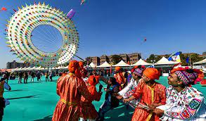
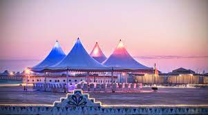

FESTIVALS

Navaratri is an annual Hindu festival observed in the honour of the goddess Durga. It spans over nine nights (and ten days), first in the month of Chaitra (March/April of the Gregorian calendar), and again in the month of Sharada. It is observed for different reasons and celebrated differently in various parts of the Hindu Indian cultural sphere. Theoretically, there are four seasonal Navaratri. However, in practice, it is the post-monsoon autumn festival called Sharada Navaratri. The festival is celebrated in the bright half of the Hindu calendar month Ashvin, which typically falls in the Gregorian months of September and October.

Uttarayan
Uttarayan is a Hindu festival in celebration of the winter solstice and the transition to springtime, as well as the harvest. The name Uttarayan often refers to the period between the winter solstice and the summer solstice, but sometimes the name is used to refer to a celebration lasting a few days. In some places, Uttarayan is celebrated with kite flying, and the name Uttarayan is sometimes used as the name of a kite festival, notably in the Indian state of Gujarat. Uttarayan is sometimes called Makar Sankranti. Similar festivals that take place at the same time are known as Pongal and Lohri, though these may be considered entirely separate observances (even though they also celebrate the harvest and the transition to springtime).

Rann Utsav
Rann Utsav is one of the most eagerly-awaited tourism events of India, which celebrates the marvels of nature at the White Desert and the rich cultural and artistic heritage of Kutch. The concept of Rann Utsav was envisioned by Hon’ble Prime Minister Shri Narendra Modi, the then Chief Minister of Gujarat. Visiting on Full Moon Day must be dream for every traveller. Kutch Rann Utsav is the shimmering landscape that gives the enchanting moments of this Fest, which feels like as Heaven On Earth during Festival Time. In fact, it’s a Family holiday destination to explore fun moments and store in cameras for life time.